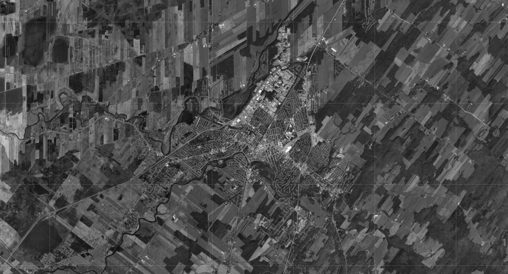
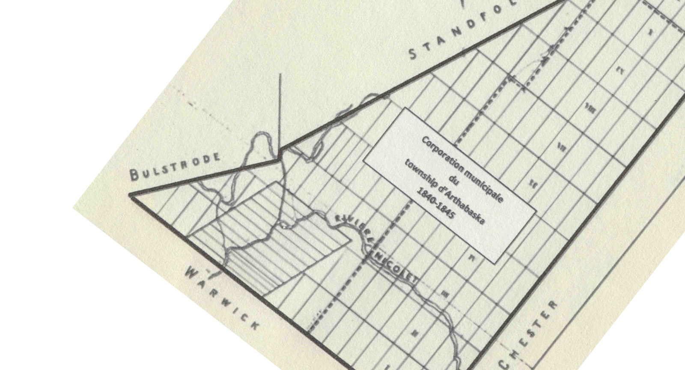

Ce projet est né d’un livret imprimé portant sur la perte des terres agricoles
à Victoriaville. Il prend appui sur mon histoire familiale, puisque mes arrière-
grands-parents ont eux-mêmes été déplacés pour laisser place à la construction d’usines et de quartiers résidentiels.
Aujourd’hui, ce projet prend une nouvelle forme à travers un site web. Cette version numérique permet d’explorer plus directement le territoire, en mettant l’accent
sur l’emplacement des archives, les transformations du paysage et la disparition progressive des terres agricoles au profit de l’expansion urbaine.
À travers des cartes, des comparatifs visuels et des souvenirs, le site cherche
à rendre visible ce qu’on oublie souvent : sous plusieurs maisons, routes et usines d’aujourd’hui se trouvent d’anciennes terres agricoles. Le projet prend Victoriaville comme point de départ, mais il ouvre aussi sur une réalité plus large, celle de
la perte de terres cultivables partout au Québec.
Ce site n’est pas un reproche, mais une invitation à regarder autrement le territoire
et à réfléchir à ce que l’on choisit de faire disparaître.